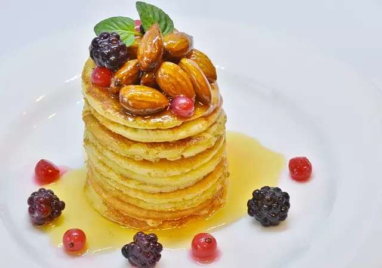

Pancakes con frutos rojos
Pancakes Veganos con Frutos Rojos: Un Desayuno Dulce y Saludable para Disfrutar con Sabor Natural y Nutritivo.
Disfruta de estos deliciosos pancakes veganos con frutos rojos, una opción dulce y saludable para tus desayunos o meriendas. Puedes acompañarlos con más frutas, frutos secos o crema batida vegana para darles un toque extra de sabor.
Ingredientes
- 1 taza de harina de trigo integral
- 2 cucharadas de azúcar (preferiblemente azúcar de coco o azúcar moreno)
- 2 cucharaditas de polvo para hornear
- 1/4 cucharadita de sal
- 1 taza de leche de almendras o cualquier otra leche vegetal
- 2 cucharadas de aceite vegetal (como aceite de coco derretido o aceite de girasol)
- 1 cucharadita de extracto de vainilla
- Frutos rojos frescos (como fresas, arándanos o frambuesas) al gusto
- Jarabe de arce o miel de agave para servir
Paso a paso
- En un tazón grande, mezcla la harina de trigo integral, el azúcar, el polvo para hornear y la sal.
- En otro tazón, combina la leche vegetal, el aceite vegetal y el extracto de vainilla. Mezcla bien.
- Vierte la mezcla líquida en el tazón de ingredientes secos y revuelve con una cuchara hasta obtener una masa homogénea. No mezcles en exceso, es normal que queden algunos grumos.
- Precalienta una sartén antiadherente a fuego medio-alto. Si es necesario, unta un poco de aceite vegetal para evitar que los pancakes se peguen.
- Vierte aproximadamente 1/4 de taza de masa en la sartén caliente para formar cada pancake.
- Coloca algunos frutos rojos frescos sobre la superficie de cada pancake.
- Cocina los pancakes durante unos 2-3 minutos por cada lado, hasta que se formen burbujas en la superficie y estén dorados.
- Retira los pancakes del fuego y sírvelos calientes con un poco de jarabe de arce o miel de agave por encima y más frutos rojos frescos si lo deseas.